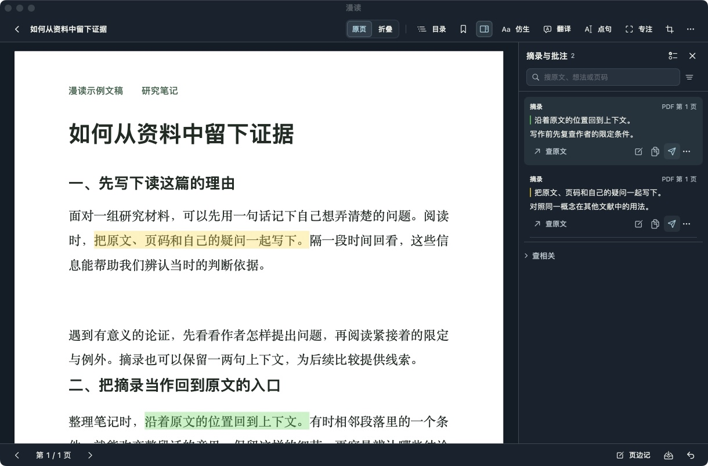

选一篇
收下网页、PDF、Markdown，也可从 Zotero 或 Obsidian 收录。每批最多三篇，随时换一批。
Mac 上的稍后阅读
待读材料再多，每次也只看一小批。值得留下的原文和想法，带着出处送进 Obsidian。
Apple 芯片 · macOS 13 或更新版本
收下网页、PDF、Markdown，也可从 Zotero 或 Obsidian 收录。每批最多三篇，随时换一批。
用专注模式留出阅读空间。中文 PDF 可按章节折叠、识别多级目录，点标题回原页。
划线、摘录或写批注，再发送到 Obsidian。支持按文献归档、批量发送和回到原文。

关联 Zotero 的论文，会把已有的引文键写进 Markdown。能确认版面页码时，引文里也会带上页码。
把原文、页码和自己的疑问一起写下。
[@example2025, p. 12]
收件位置与笔记模板可以自定义。同一篇文献的摘录会追加到同一份笔记。
0.9.12 · Apple 芯片 · macOS 13 或更新版本
解压 ZIP，把「漫读.app」拖进「应用程序」。如果 macOS 提示无法验证开发者，可以在确认下载来源后前往「系统设置 → 隐私与安全性」选择「仍要打开」。Apple 的说明 ↗
论文摘录支持 Zotero 引文键和版面页码。原页、折叠、文本与双语对照的常用操作更一致，批量发送带有进度、结果和重试入口。0.9.12 发布说明 ↗